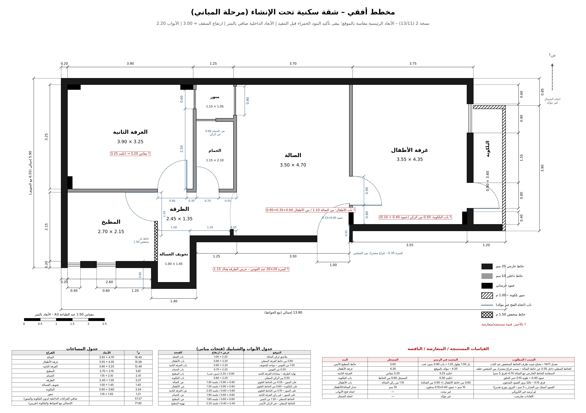

مخطط أفقي لمرحلة المباني، الأبعاد الرئيسية مقاسة بالموقع. البنود الحمراء: اتجاه فتح الأبواب، اتجاه الشمال، فرق 15 سم في باب الأطفال.

{"TI": 0.1, "TE": 0.2, "ROOMS": {"living": {"name": "الصالة", "box": [0.0, 0.0, 3.5, 4.7], "dims": "3.50 × 4.70"}, "kids": {"name": "غرفة الأطفال", "box": [3.6, 0.35, 7.15, 4.7], "dims": "3.55 × 4.35"}, "room2": {"name": "الغرفة الثانية", "box": [-5.25, 1.45, -1.35, 4.7], "dims": "3.90 × 3.25"}, "kitchen": {"name": "المطبخ", "box": [-5.25, -0.8, -2.55, 1.35], "dims": "2.70 × 2.15"}, "bath": {"name": "الحمام", "box": [-1.25, 1.45, -0.1, 3.55], "dims": "1.15 × 2.10"}, "manwar": {"name": "منور", "box": [-1.25, 3.65, -0.1, 4.7], "dims": "1.15 × 1.05"}, "corr": {"name": "الطرقة", "box": [-2.45, 0.0, 0.0, 1.35], "dims": "2.45 × 1.35"}, "niche": {"name": "تجويف الغسالة", "box": [-2.45, -1.45, -1.45, 0.0], "dims": "1.00 × 1.45"}, "balcony": {"name": "البلكونة", "box": [7.35, 0.35, 8.25, 3.95], "dims": "0.90 × 3.60"}}, "WALLS": [[-5.45, -1.0, -2.45, -0.8, "E"], [-2.65, -1.65, -2.45, -0.8, "E"], [-2.55, -1.65, -1.25, -1.45, "E"], [-1.45, -1.65, -1.25, 0.0, "E"], [-1.25, -0.2, 3.5, 0.0, "E"], [3.5, 0.15, 8.35, 0.35, "E"], [3.5, -0.2, 3.6, 0.35, "E"], [-5.45, -1.0, -5.25, 4.9, "E"], [-5.45, 4.7, 0.0, 4.9, "E"], [0.0, 4.7, 7.35, 4.9, "E"], [7.15, 3.95, 7.35, 4.9, "E"], [7.15, 0.15, 7.35, 3.95, "E"], [-0.1, 1.35, 0.0, 4.7, "I"], [-1.35, 1.35, -1.25, 4.7, "I"], [-1.25, 3.55, -0.1, 3.65, "I"], [-2.45, 1.35, -0.1, 1.45, "I"], [-5.25, 1.35, -2.45, 1.45, "I"], [3.5, 0.35, 3.6, 4.7, "I"], [-0.2, 0.0, 0.0, 0.2, "E"]], "LOW_WALLS": [[-2.55, -0.8, -2.45, 0.45, 1.5]], "PARAPET": [[8.25, 0.15, 8.35, 4.05], [7.35, 3.95, 8.35, 4.05]], "DOORS": {"main": {"box": [2.5, -0.2, 3.5, 0.0], "w": 1.0, "label": "باب الشقة 1.00"}, "kids": {"box": [3.5, 0.95, 3.6, 1.85], "w": 0.9, "label": "باب الأطفال 0.90"}, "bath": {"box": [-1.25, 1.35, -0.55, 1.45], "w": 0.7, "label": "باب الحمام 0.70"}, "room2": {"box": [-2.45, 1.35, -1.55, 1.45], "w": 0.9, "label": "باب الغرفة الثانية 0.90"}, "balcony": {"box": [7.15, 0.85, 7.35, 1.65], "w": 0.8, "label": "باب البلكونة 0.80"}, "kitchen": {"box": [-2.55, 0.45, -2.45, 1.35], "w": 0.9, "label": "باب المطبخ 0.90", "no_lintel": true}}, "ARCH": {"box": [-0.1, 0.0, 0.0, 1.35], "label": "قوس مدخل الطرقة"}, "WINDOWS": {"living": {"box": [-0.1, 3.75, 0.0, 4.65], "size": "0.90×0.90", "sill": 1.3, "label": "ش. الصالة"}, "kids": {"box": [7.15, 3.2, 7.35, 4.1], "size": "0.90×0.90", "sill": 1.3, "label": "ش. الأطفال"}, "room2": {"box": [-1.35, 3.95, -1.25, 4.55], "size": "0.60×0.60", "sill": 2.0, "label": "ش. الغرفة الثانية"}, "bath": {"box": [-1.25, 3.55, -0.65, 3.65], "size": "0.60×0.60", "sill": 1.9, "label": "ش. الحمام"}, "kitchen": {"box": [-4.35, -1.0, -3.75, -0.8], "size": "0.60×0.60", "sill": 1.8, "label": "ش. المطبخ"}, "vent": {"box": [-5.25, -1.0, -4.85, -0.8], "size": "0.40×0.40", "sill": 2.2, "label": "تهوية المطبخ"}}, "COLUMNS": [[7.0, 0.35, 7.15, 0.75, "عمود 0.40 × بروز 0.15"], [-5.25, 4.55, -4.85, 4.7, "عمود 0.40 × بروز 0.15"], [-1.75, 4.55, -1.35, 4.7, "عمود 0.40 × بروز 0.15"], [-5.25, 1.45, -5.1, 1.85, "عمود 0.40 × بروز 0.15"], [3.475, 0.35, 3.625, 0.75, "عمود 0.40 × 0.15 مدفون"]], "FLAGS": [["حائط المطبخ الأيمن", "3.00", "بار 1.50 بطول 1.25 + باب 0.90 بدون عتب", "تعديل 14/11 – يحتاج تثبيت طرف الحائط المنخفض عند الباب"], ["غرفة الأطفال", "4.35", "4.35 – مؤكد بالموقع", "الحائط السفلي داخل 0.35 عن حائط الصالة – بسبب فراغ مشترك بين الشقتين خلفه"], ["الغرفة الثانية", "3.20 مقاس", "اعتُمد 3.25", "لاستقامة الحائط الخارجي مع الصالة 4.70 (فرق 5 سم)"], ["باب البلكونة", "المسجل 0.60 من الحائط", "اعتُمد 0.50", "عمود 0.40 + طوبة 0.10 حتى الحلق"], ["باب الأطفال", "1.10 من ركن الصالة", "0.60 من حائط الأطفال (= 0.95 من الصالة)", "فرق 0.15 – غالبًا بروز العمود المدفون"], ["جدار الصالة/الأطفال", "10 سم", "10 سم + عمود 0.40×0.15 مدفون", "العمود أسمك من الجدار بـ 5 سم – البروز موزع تقديريًا"], ["اتجاه فتح الأبواب", "—", "غير محدد", "لم يُرصد في الكروكي"], ["اتجاه الشمال", "—", "غير مؤكد", "الإفادات تعارضت"]]}